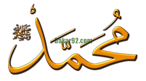

le meilleur endroit pour apprendre les oeuvres de BAYE NIASS
soldarou baye niasse se dote d'un nouveau site internet(Zik@r): Ce site vous permettra de
suivre découvrir l'entreprise et de rester en contact avec nous.
Il permettra également aux adhérents d'être informé des prochains événements, assemblées ...
Les bienfaits du zikr: Les maladies cachées du cœur ne peuvent être guéries que.
par la constance dans le zikr. Et rien ne peut atténuer les pensées sataniques,
autre que le zikr. BayeNiass Citations, Cheikh Ahmed Tidiane, Citations De Baye Niass,
kashful albas, La Faydha, La Tijaniya, Leçon du jour, Livres, Paroles en or
pour comprendre le sens de notre site,son vrai role n'hesiter pas à cliquer dessus:"apropos notre site"
nous avons parler notre motivation pour créér ce site,les objectifs que nous avons visé
pour ce qui sont intéressés pour les ouvres de cheikh ibrahima Niass
pourrons accéder facile sur la vie et l'oeuvres de leur guide spirituel
le site à pour opportinité pour les fidels tidianes de connaitre et métriser
sur quel chemin Mawlana ibrahima Niass était.Retenait que:
le cheikh al-islam El hadji Ibrahim ibn El hadji Abdoulaye Niass,né
en 1900 à Taiba Niassene et mort le 26 juillet 1975 à londres,est un savant,
maitre soufi sénégalais,ainsi q'un imam de la conférie Tijaniyya.
La vie du Prophète Muhammad - Que la paix et le salut soient sur
lui -,
considéré par les musulmans comme le dernier Envoyé de Dieu, est pourtant édifiante,
profonde, lumineuse. Elle est l'histoire de la foi, de la mystique et de l'engagement.
Elle est aussi l'histoire de la simplicité, de la conviction, de l'ouverture et de la
détermination. Célébration de la naissance du Prophète Mouhamed (Psl): Qui
était Al Amine ? E nviron 600 années après le départ du prophète Issa (Jésus) , comme
Allah n'avait envoyé aucun autre Messager sur terre,
les gens étaient plongés dans l'obscurité.

Pour savoir tout ce que cheikh ibrahima niass a dit sur le khoutboul raban
khalifatoul lahi ramzoul kawni rouhoul diamil khalkhi wa wala asloul
loul woudiodadi lizaka oumtou xaramane mine mawadatihi tadadouni
zafaratoun koula aw khati cheikh ahmed tidiani cherif cliqué ici